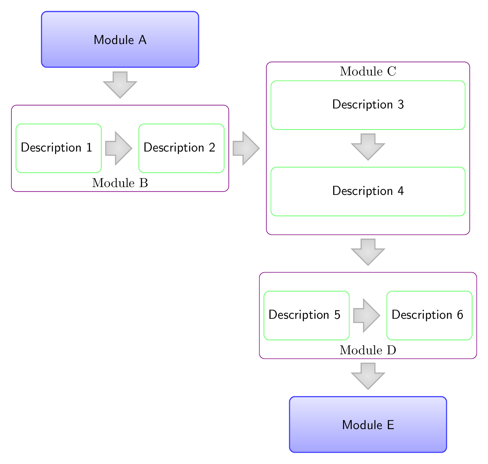

\documentclass[border=3mm]{standalone}
\usepackage{tikz}
\usetikzlibrary{positioning,matrix,shapes.arrows}
\tikzset{
modulematrix/.style={draw=blue!50!red,rounded corners,matrix of nodes,row sep=1cm,column sep=1cm,nodes={draw=green!70,align=center,font=\sffamily},inner ysep=0.5cm},
module/.style={rounded corners, align=center, font=\sffamily, thick},
simple module/.style={module, top color=blue!10, bottom color=blue!35, draw=blue!75, text width=40mm, minimum height=15mm},
module down arrow/.style={module arrow, shape border rotate=-90},
module right arrow/.style={module arrow},
module arrow/.style={single arrow, single arrow head extend=2.5mm, draw=gray!75, inner color=gray!20, outer color=gray!35, thick, shape border uses incircle, anchor=tail,minimum height=0.7cm},
}
\begin{document}
\begin{tikzpicture}
\node [simple module] (mA) {Module A};
\matrix[modulematrix,below=of mA,label={[anchor=south]below:Module B}] (mB) {Description 1 & Description 2 \\};
\matrix[modulematrix,right=of mB,nodes={text width=5cm,align=center},label={[anchor=north]above:Module C}] (mC) {Description 3 \\ Description 4 \\};
\matrix[modulematrix,below=of mC,label={[anchor=south]below:Module D}] (mD) {Description 5 & Description 6 \\};
\node [simple module,below=of mD] (mE) {Module E};
\foreach \n in {mA,mC-1-1,mC,mD}
\node[module down arrow,below=1mm of \n] {};
\foreach \n in {mB-1-1,mB,mD-1-1}
\node[module right arrow,right=1mm of \n] {};
\end{tikzpicture}
\end{document}Created by David Li